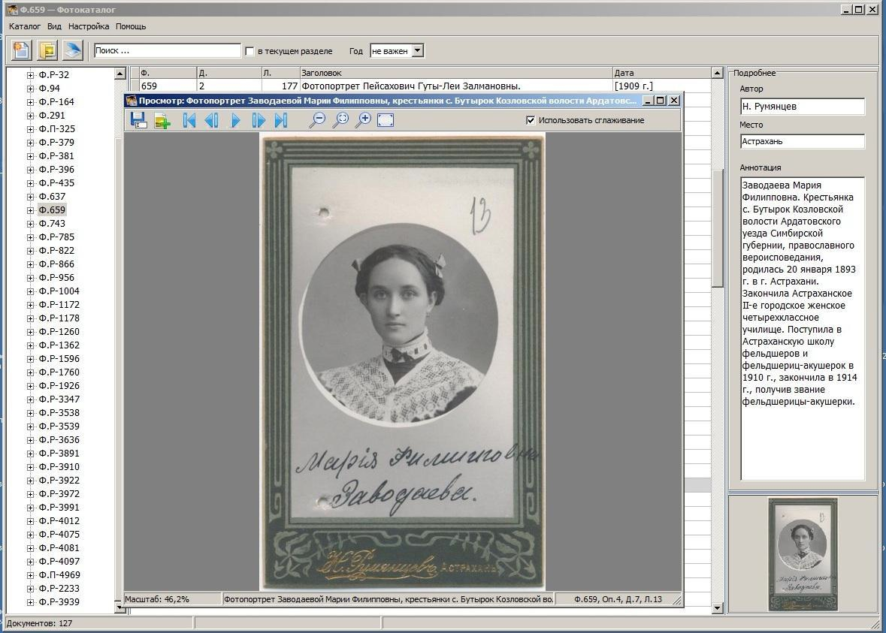

Электронный архив
Электронный архив предоставляет пользователям возможность поиска архивных материалов в цифровом формате. Здесь можно ознакомиться с описаниями фондов, историческими документами, фотографиями, публикациями и тематическими коллекциями, связанными с историей Астраханской области.
📄 Что доступно онлайн
- Описи фондов (более 1500)
- Оцифрованные метрические книги
- Исторические фотографии
- Старые карты и планы
- Газеты и журналы прошлых лет
🔍 Как пользоваться
- Поиск по ключевым словам
- Фильтрация по датам и фондам
- Просмотр цифровых копий онлайн
- Скачивание в высоком качестве
- Сохранение в избранное
📊 Статистика электронного архива
25 000+
цифровых копий
500+
фондов онлайн
100 000+
запросов в год